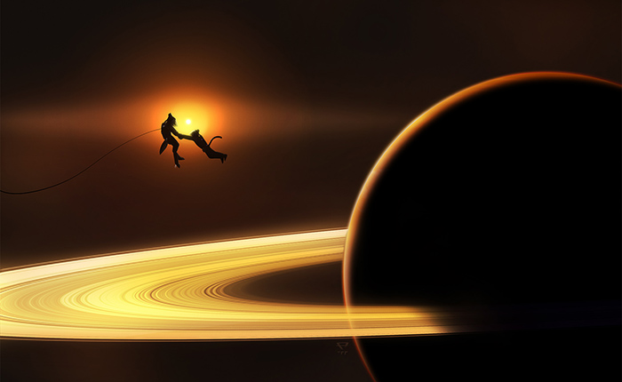

Saturn
| Saturn | |
|---|---|
| Saturn ▸ Sol ▸ Terran Core Quarter | |
|

Two lovers around Saturn.
|
|
| Catalogue name | Sol g |
| Catalogued | Ancient |
| Demonyms | Saturnian |
| Orbital characteristics | |
| Semimajor axis | 1 514 500 km |
| Orbital period | 29.457y |
| Eccentricity | 0.0489 |
| Sidereal day | 10h 33m |
| Synodic day | 10h 32m |
| Satellites | Titan Rhea Dione Tethys Enceladus Innumerable natural satellites Cassini station Hundreds of artificial installations |
| Physical characteristics | |
| Mass | 5.683 × 1026 kg |
| 95.2 M⊕ | |
| Mean radius | 58,232 km |
| 9.14 R⊕ | |
| Surface gravity | 10.44 m/s2 |
| 1.064 g⊕ | |
| Climate and atmosphere | |
| Composition | 96% hydrogen 3% helium < 1% other gases |
| Habitation | |
| Population | 1.104 billion |
| Affiliation | Terran Federation |
| Settled | 12M 091 |
| Political capital | Cassini |
| Largest settlement | Roche (Rhea) |
| Major settlements | Janus (Rhea) Giovanni (Dione) Huygens (Titan) |
{kind=link}
Saturn (Sol g, or Sol-VI) is a gas giant of Sol and the second largest planet in its system, famous for its striking and photogenic ring structure as well as lively local community. Saturn is an economically and strategically important Terran hub world in the Sol system, home to over 1 billion inhabitants, second only to Earth.
History
The first crewed Terran missions began in the late 000s century. Huygens base was established in 091, some 25 years after the Terran presence was established around Jupiter, owing much to the vast distances found in the outer Solar system. The then new warp drive was key to the exploration of distant bodies such as Saturn.
Development was limited, however, until after the First Exchange, where the new antimatter economy could justify continued expansion of settlements on Saturn’s moons. With a greater energy budget than ever, proposals were even introduced to terraform some of the moons in their entirety.
The Solstice War, however, largely put those plans and development on hold. During the war, Saturn, alongside Uranus, was a hotly contested strategic point, given by its location within the Sol system, as well as its viability as a strategic supply depot, especially for fuel.
After the conclusion of the war and the formation of the Terran Federation, development resumed at an accelerated pace around Saturn as a mining hub for light metals, water, and fuels from the gas giant’s atmosphere. Proposals to terraform the moons were revived, although mostly scaled back.
Habitation
A number of moons around Saturn have been partially terraformed, namely portions of Rhea, portions of Dione, as well as portions of Tethys. These pockets of terraforming are achieved by sectioning portions of the moon into airtight regions with transparent roofs, then importing air, water, and vegetation to achieve an Earthlike environment.
The terraforming of Titan was proposed prior to the Solstice War, but never came to fruition as Titan’s computation-based economy relies heavily on the planet’s dense atmosphere and frigid temperatures. Among other moons, notably Enceladus, settlements using more traditional means, with airtight or underground habitats.
Society
Saturnians are diverse, as per Terran usual on more populous worlds, as well as being rather outspoken, friendly, and lively, sometimes to the point of aloofness. The nightlife is a popular staple in Saturnian society. Saturnian government is highly formal and stratified, adhering to a very federalist model of government.
Saturnian politics are equally as diverse as its population, but generally favour those of the Social Democratic Party, as well as more scattered support for more Anarchist alignments such as the Anarchist or Social Market parties.
Economy
Saturn’s economy is primarily based on mining its atmosphere for fuels like hydrogen, and helium-3, as well as a number of other gases including helium-3 and methane. Atmospheric mining is done on board aerostat installations within Saturn’s atmosphere, that passively collect gases and refine them using onboard facilities. These facilities are often powered by networks of wind turbines, situated deeper in the Saturnian atmosphere. Transport shuttles continuously ferry material and passengers from these stations into orbit, which can then be exported elsewhere.
Saturn’s moons enjoy a lucrative industrial economy. The non-terraformed portions of Saturn’s moons, as well as their low gravity, allow for high-output industries as well as extensive aethership businesses. Enceladus’ water export economy is also taken advantage of, giving the habitation of the moons an edge in terms of affordability.
Saturn’s picturesque ring system is the subject of much of Terran’s art. The terraformed portions of the moons grant tourists the view of the rings, while requiring little in the way of spacesuits or environmental protection. The lively Saturnian community also contributes to boost the planet’s popularity as a tourist destination.